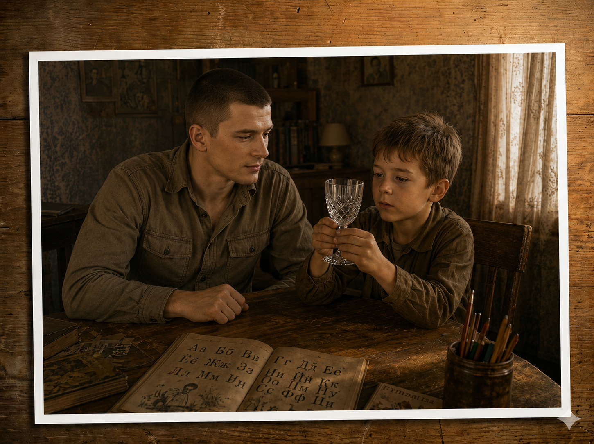
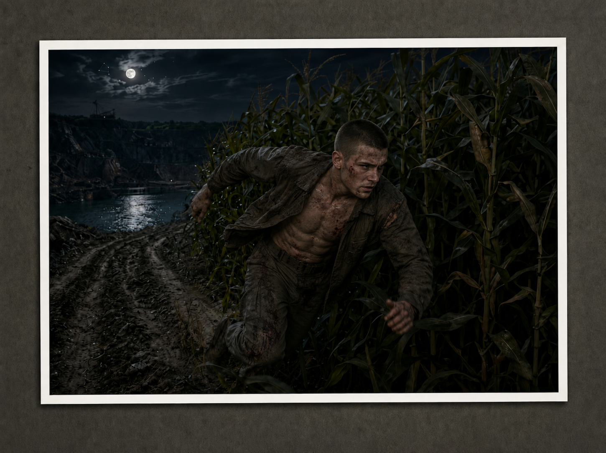

Часть 1
Глава 4
Ханох тонул в мутной и грязной воде. Воздух кончался. Он стискивал губы, чтобы не захлебнуться. Он знал, что раньше мог дышать под водой, но как, он не помнил. Чем дышать, если тебя окружает вода?
Воздух в легких кончался. И что-то давило на грудь. Он хотел избавиться от того, что давило!
Ханох дернул руками. Что? Почему?
Все тщетно - руки примотаны к телу. Его спеленали! Руки связаны, а на голову надели мешок.
Сердце билось в висках. Он напряг свою каждую жилу. Выгнулся и рванулся, — но сил не хватило. Лёгкие горели, и Ханох с ужасом понял, что в этот раз проиграл.
Но прежде, чем сдаться… Еще попытка, последняя.
Он даже рыкнул с натуги – и почувствовал: путы чуть-чуть поддались! В следуещее мгновенье его сотряс резкий удар.
- Прикольно, - услышал он женский насмешливый голос. – Наследник, потише, а то ведь убьешься!
Перед глазами доска. Цвет бардовый. Он отпрянул, но пелены крепко держали его.
- Ой, - теперь хихиканье сзади, - какой ты неловкий! А говорили, что ты лучший боец из бойцов! Наврали, собаки? В одеяле запутался - куда уж тебе воевать! Эй, малыш, ау, ау! Ну давай же, ответь что-нибудь мне!
- Ты кто?! – Заорал Ханох.
Ханох силился вспомнить, где он находится. Казалось, ещё чуть-чуть — и он вспомнит. Но этот голос — мелодичный, но такой издевательский, очень мешал…
- Не ори, ты всех перебудишь! – Голос стал притворно заботливым. - Бедненький, он головкой ударился… Эй, ты в порядке? Не бо-бо? Не тошнит? Темные круги перед глазами не плавают?
- Тошнит? Это как? – Переспросил Ханох, споткнувшись о незнакомое слово. — Да кто ж ты такая, чтоб тебя скрючило…
Раздался издевательский смех.
- Скрюченный -ты, а у меня все прекрасно.
Ханох уперся ногами, выгнул спину и … опа… Ну наконец! Ханох осмотрелся.
Он в маленькой комнатке. Потолок — такой низкий, что, встав во весь рост, он задел бы за лампу под потолком. И разом все вспомнил. Отца, и Нааму, и как нашел пирамидку. Ряды кукурузы, в которой он прятался, чтобы случайно не попасться на глаза хозяину убитых рабов…
Он вылез из одеяльной ловушки и отшвырнул одеяло…
…Она сидела на столе, сцепив на затылке пальцы в замок и чуть склонив светловолосую голову. Усмешка играла у нее на губах. Одна нога на полу – носком она едва касалась досок. Вторая — на стуле, поверх одежды Ханоха. Небрежно-ленивая поза, но в её выверенности Ханох увидел расчёт.
Красавица была почти голой - на ней было что-то очень прозрачное — скорее намёк на одежду, чем настоящий наряд. Прозрачная ткань была почти не видима на мраморной коже. От прохлады или от чего-то еще сосочки топорщились, а кожа покрылась мурашками. Их взгляды встретились - она смотрела на него с любопытством..
- Очухался? Я вижу - очухался.
- Я… - Пробормотал Ханох. – Я…
— Ты – это ты, точно, не сомневайся, - кивнула красавица. – А я это я.
И она потыкала себя пальцем между грудей. От этого движения Ханох нервно сглотнул.
- Еще слова знаешь? - Красавица изогнула левую бровь.
- Ты кто? – Эти два слова дались ему уже легче.
Он глубоко вздохнул – спокойно, это обычная баба. Только очень красивая. И очень нахальная.
Но какова! Подмышками – ни волоска, а на лобке тонкая полоска белобрысого ежика…
Ханох задохнулся - он такого не видел. Но как это сделано? Сбрила? Но не видно щетины. Выщипала? Ханох поежился, словно это у него выщипали все на лобке. Нет, ни одна женщина не пойдет на такое. Наверное, сбрила. Интересно, сама? Или ей помогают? Служанки? Или, быть может?..
Возникло видение. Раб - высокий красавец: плечи широченные, а бедра узкие, как у мальчишки. Живот его - шесть каменных плиток. И смуглая кожа раба обтягивает его рельефные мышцы.
Он обнажен. Обнажена и она. Рядом с атлетом - она словно хрупкая девочка. Его мощные руки могут обхватить её всю – и она тает, растворяется в нем. Хотя… За подобное рабу полагается смерть!
На треножнике под чашей из золота пылает огонь. В ней отвар из толченого мыльного корня.
Ложечкой раб перемешал содержимое, снял чашу с огня и опустил в холодную воду – раствор надо поскорей остудить. Время от времени раб сует палец в раствор.
Только мыло остыло, атлет добавляет мед, масло оливы и каолин. Долго и тщательно перемешивает.
Готово. Несколько капель масла из эвкалипта и в последний раз размешать. Раб капает жидкость себе на ладонь, растирает. Мыло пенится. Атлет поклонился.
Девушка подходит. Раб берет нож из черного камня. Осторожно, чтобы не порезать палец об острую кромку, придирчиво проверяет её.
Красавица ждет. Она уже на краю теплой миквы и задумчиво водит ступнёй по воде. Другую она поставила пяткой на бортик.
Раб ставит чашу, спускается в микву. В левой руке обсидиановый нож, а правой черпает из кубка. Девушка подается назад, опираясь на локти. Раб осторожно начинает намазывать пасту на короткие, отросшие после последней процедуры волосики. Красавица прикрывает глаза, и легкая улыбка заиграла на её алых губках…
Ханох громко вздохнул, и атлет исчез вместе с миквой и обсидиановой бритвой.
«Красота — главное сокровище женщин, — вспомнил Ханох. — И главный инструмент власти над нами»
Сестра ему это вдолбила. Чтобы он на других не заглядывался …
Ладно, перед ним - просто баба. Одна из многих. Такая, как все.
Красавица, поняв, что он, наконец, собой овладел, потянулась, как кошка, и в руках у нее оказалась бутылка.
Поглощенный видением, Ханох до сих пор не замечал массивной бутылки, пробку которой удерживал в горлышке зажим из чистого золота, и двух хрустальных бокалов.
Бокалы… Да за владение такими вещами мало кто удержался бы, чтобы убить!..
Ханох готов был поклясться, что ни бокалов, ни бутылки мгновенье назад еще в комнате не было. И все же бутылка вот она – в руке у нее!
Наследник очень удивился своей невнимательности, но объяснил себе, что спросонья пялился только на голую бабу и ничего больше не видел, кроме неё.
Гостья сорвала с пробки зажим. Хлопок – и пробка катится по полу, срикошетив о стену. Хорошо еще, что не угодила в светильник. Ханох поискал взглядом зажим, но тот словно в воздухе растворился.
«Наверное, улетел под кровать» - Подумал наследник.
Пена с шипеньем взметнулась из горлышка и залила колени красавицы. Та на это не обратила внимания, и налила вино в свой бокал. Потом повернулась к Ханоху.
Он взял второй бокал со стола и протянул бабе. Та щедро плеснула в него, пена снова перелилась через край и с руки Ханоха пролилась на пол. Ханох исподлобья посмотрел гостье в глаза, затем посмотрел на мокрую руку. И на лужи вина на столе, на полу.
Нагая расхохоталась и шлепнула ладонью по лужице. Брызги веером разлетелись по комнате, а Ханох смахнул каплю со лба. Сумасшедшая подняла в салюте бокал, приглашая Ханоха к веселью. Ханох повторил её жест. И блондинка одним махом осушила бокал.
Пена опала и вина в бокале Ханоха осталось на донышке. И Ханох его осушил вслед за ней.
Блондинка захохотала, и так изогнулась, что у Ханоха перехватило дыхание.
…Он спал всегда голым, поэтому все его мысли были очевидны без слов. По лицу бабы он понял: ещё один миг — и он окажется под шквалом насмешек. Ему захотелось схватить эту насмешницу, сжать её, смять, опрокинуть и услышать её сдавленный стон.
Наследник шагнул. Он знал - перед его напором ни одной бабе не устоять. Но не этой!
Улыбка слетела с губ соблазнительницы. Её изящная ладошка метнулась вперёд и почти коснулась подбородка Ханоха. Воздух в комнате налился свинцом.
— Стоять! — приказала она. — Наследник, а ну-ка, остынь!
Ханоха прошило, словно молнией, от макушки до пят. Тело скрутило болезненной судорогой. Голова запрокинулась, перед глазами мелькнул потолок, и он затылком врезался в стену. Нога поехала на разлитом вине - Ханох рухнул на пол, в ушах зазвенело. В челюсти вспыхнула боль.
- Так-то лучше, - блондинка, как ни в чем ни бывало, подняла упавший бокал и протянула ему. - Давай-ка вот, выпей. Может, отпустит…
Сквозь темные круги перед глазами Ханох не мог не заметить, что бокал наполнен вином до краев. Всего минуту назад - он мог бы в этом поклясться – на дне оставалась последняя капля…
Ханох принюхался. Пахло очень приятно, пузырьки вскипали, лопаясь с легким шипением.
- Пей, не бойся, - приказала она.
Он послушался и пригубил вино. Вкус приятный.
- Кто ты?
- Я – посланник, - сообщила она. – Неужели не понял?
У Ханоха отнялся язык.
— Значит… Ты… ты Им ко мне послана?
Гостья кивнула торжественно, не сводя с него глаз.
— Что Он сказал? Говори! Как я вернусь? Что я должен?.. Что сделать? Но зачем… Зачем Он пытался меня утопить?
Посланник слушала его, удивленно приподняв брови.
— Он? Тебя утопить? - Она закатилась от смеха.
Её тело, запрокинутая назад голова, отведенный в сторону бокал, в котором вина оставалось на донышке… У Ханоха сердце подпрыгнуло к горлу и в висках застучало. Он изо всех сил стиснул челюсти и уставился в потолок.
– Если бы пытался – то утопил бы! Ты сам виноват. Зачем командиру грубил?
— Кому? Командиру? – От удивления Ханох сморщил лоб. - Кто это?
— Ну твой командир!
Слова посланника были понятны, но смысл от него ускользал.
— У меня нет командира… Только отец!
Между идеальными бровями гостьи пролегла глубокая складка.
— Ты издеваешься над нами? Или не помнишь? – Задумчиво спросила она. - Ну-ка, посмотри мне в глаза!
Ханох утонул в её огромных глаза и подумал, что до сих пор не заметил её невероятно длинных ресниц.
- А ведь ты и правда не помнишь…
Она глотнула вина.
- Ты – солдат. Ты это помнишь?
- Это помню! Я командую шмирой моего отца! Еще я помню бассейн. В нем я нашел пирамидку. В ней был глаз – я посмотрел в него и взлетел. А тело… мое тело… я видел его. Оно лежало, как мертвое. Вот…
Посланник подперла подбородок рукой и некоторое время разглядывала наследника молча.
- Так, - сказала она. - А потом?
- А потом я оказался в яме с водой! С мерзкой, вонючей водой!
Посланник спрыгнула со стола и стремительно шагнула к Ханоху. Она стояла вплотную к нему. Он чувствовал запах вина, теплой кожи и чем-то невыразимо прекрасным. Ханох дернулся было назад, но она уже стиснула ладонями его голову.
- Неужели не помнишь?.. Как странно… Но если ты все забыл, то как же ты тут очутился? И как умудряешься изъясняться с этим народом?
— Меня привел сюда Михаил. Я учу их язык.
— Кто такой Михаил?
- Он хозяин этого дома.
- И он учит тебя языку?
— Не он – его сын.
Ханох вырвал голову из её рук. Он начинал злиться.
- Если ты посланник, почему задаешь так много вопросов?
Она запрыгнула обратно на стол.
— Так значит, ты просто забыл…
— Ну, хватит! Чего я забыл?
— Мы думали, ты притворяешься… Прячешься…
У Ханоха все закаменело внутри.
— Где я? – Ханох внезапно охрип. – Что случилось со мной?
— Как ты думаешь?
- Я не знаю…
Посланник снова разлила вино по бокалам. При этом бутылка осталась полна.
- Давай выпьем, Ханох.
- Пей сама! Ты объяснишь, наконец, что случилось?
- Не ори – мне надо подумать!
Ханох нервно прошелся по комнате.
- Слушай, посланник, - он встал перед ней. – Ты должна…
– Сам разбирайся! — сказала посланник тоном строгой наставницы. - Ты попал сюда по собственной глупости и, либо ты найдешь выход сам… либо тут сдохнешь.
- Но…
- Заткнись!
Ханох одним движением опрокинул вино себе в рот и утер губы ладонью.
- Еще? – Заботливо спросила посланник.
Ханох подставил бокал.
- Ладно, - пробормотала она. - Тело мы приведем тебе в норму…
И она кокетливо поставила на стол свой бокал и стрельнула глазами.
Ханох пытался смотреть ей в глаза, как и подобает при разговоре с посланником, но взгляд невольно соскальзывал ниже — к груди, к животу, к бедрам, на которых блестели не высохшие капли вина. Ханох огромным усилием отогнал от себя опасные мысли.
Посланник потянулась, и казалось, даже мяукнула от удовольствия. Потом пригладила рукой свои длинные белокурые волосы, и Ханох увидел, что в ее пальцах что-то блеснуло.
Она протянула руку вперед и Ханох увидел в ней ложечку. На ложечке был неопрятный мокрый комок. Он выглядел, как размоченный хлеб.
– Рот открой! – Приказала посланник. – Ну, живей!
Он открыл.
- Глотай!
Содержимое ложечки выглядело неаппетитно, но Ханох закрыл глаза и слизнул. Голова закружилась, он еле успел ухватиться за спинку кровати.
- Запивай! – Она сунула ему под нос полный бокал. – Пей, давай!
Глядя мутным взором на голую бабу Ханох, выпил шипящую жидкость. Немедленно ему стало хуже, головокруженье усилилось, и он опустился на стул. Ему пришло в голову, что его отравили.
- Что это было? – Вымолвил он.
- Как тебе объяснить… — она скроила гримаску. – Ты ведь столько забыл…
- Я все помню!
- Ты не помнишь, как прожил здесь почти двадцать лет… и это не считая беременности.
- Беременности?!
- Ну да, - посланник отхлебнула вино.
Бокал её снова был полон.
- Тебе же надо было родиться. Или ты думаешь, что души по желанию переселяются в новое тело?
- Души?..
Посланник постучала указательным пальцем по передним зубам.
- Да, вот так номер…
Она, прищурившись посмотрела Ханоху в глаза.
- Ты что, мне не веришь?
Посланник пожала плечами.
- Все может случиться… Ты здесь родился и прожил всю свою жизнь. Пошел в армию. И тебя…
- Утопили! – Закончил Ханох. – Я понял, что ты хочешь сказать, только вот вопрос: если все так, почему я дал себя утопить, а не убил сразу этих рабов?
Посланник несколько раз мелко кивнула.
- Вот чтобы это узнать, меня и послали к тебе.
Ханох облизнул губы и выдохнул, как от удара в живот.
- Зачем ты врешь? Здесь все другое, здесь забыли о нас и об Элоге. Я ничего здесь не знаю. Я учусь говорить. Нет, ты врешь, я здесь несколько дней…
- Видишь ли, - на хрустальных гранях её теперь пустого бокала вспыхнули искорки. - Можешь думать, что хочешь - свободу воли Он еще не отменять собрался. Но лучше поверь: ты в тысячах веков от того времени, когда был наследником Йереда. Теперь ты никто. Люди – да, даже краснокровные - выродились. Ты и сам это видишь. Вырождение, к сожалению, началось еще до рождения Йереда.
Ханох хмыкнул. И ему показалось, что туман перед глазами потихоньку редеет.
- Что, становится лучше? То, что я дал тебе съесть, многое в твоем теле исправит. Твоя генетика, - Ханох хотел спросить о значении слова, но посланник не дала ему перебить. – Твоя генетика, - повторила она, - заметно улучшится. Постепенно, не сразу, это займет какое-то время. Но жизнь твоя намного дольше станет – ну, если только на самую чуточку: лет пятьдесят или восемьдесят.
Она сочувственно, почти по-родительски, улыбнулась.
- Поэтому времени у тебя не много, учти. Люди здесь стареют уже к пятидесяти, ты ведь знаешь? – Вдруг спохватилась она. – Или это тоже умудрился забыть?
Ханох подпрыгнул.
- К пятидесяти? Но это же детство! Мне за восемьдесят, а я только наследник!
Посланник вздохнула.
- Ты не наследник, ты неудачник и неуч! В этом мире живут намного быстрее – детство в семнадцать кончается, так что ты уже три года как взрослый.
Ханох встал, дошел до стола, сам налил из бутылки в оба бокала и посмотрел на просвет. Бутылка была на две трети полна. Ханох встряхнул - напиток плеснул в потолок.
- Мы уже столько раз пили, а бутылка все полная…
Посланник снова вздохнула.
— Балбес! Это все, что тебе интересно?
Ханох поболтал бокал, рассматривая, как кружится и играет вино. Туман больше не застилал взгляд, ум был ясным.
- Что такое генетика? – Спросил он, садясь на стол рядом с посланницей.
- Четверичный набор битов, определяющий свойства и форму любого живого.
Она насмешливо улыбнулась и хихикнула.
- А знаешь, Йеред был прав – тебя не исправить! Наследник из тебя никакой. Нет, забудь, не вникай, - сама себя перебила она и пробарабанила пальцами короткую дробь по столу. - Не забивай себе голову – у тебя теперь другие заботы. Запомни главное: твое тело постепенно улучшится, и станет довольно похоже на то что задумывалось при сотворении. Но оно быстро станет стареть. Органы начнут давать сбои, постепенно все станет болеть… Как-то так, тебе ясно? О’кей?
Ханох из её последней тирады половину не понял, но послушно кивнул. С долголетием он потом разберется.
– Вот и ладушки, - кивнула посланник. - Будешь хорошим мальчиком… правда я сильно сомневаюсь… но вдруг… может быть, когда-нибудь тебе позволят вернуться обратно.
Красавица сделала пару глотков.
– Кстати, не вздумай рассказывать про свою прежнюю жизнь - тебя живо посадят в психушку. Ты знаешь, что это такое? ДОПБ?
- Нет, не знаю.
- Вот лучше и не узнавай.
Она скривила губки и спрыгнула на пол. Ханох судорожно сглотнул. Красотка насмешливо фыркнула.
- Прощаемся? Держи хвост пистолетом, не кашляй, - сказала она, махнула рукой и исчезла.
- Постой! – Ханох бросился к тому месту, где только что стояла нагая красавица. — Погоди! У меня еще так много вопросов!
Он зашарил руками по воздуху, но в тесной комнатке, кроме узкой кровати, никого больше не было. Он пригладил ершик коротких волос, сжал кулаки и зашипел от бессилия.
Дверь в комнату скрипнула.
Что разговор с посланником мог кто-то подслушать, Ханох не боялся - язык, на котором они говорили с посланником, люди в этом мире забыли. А вот полное отсутствие одежды могло выйти боком: нравы в этом доме были куда строже, чем во дворце Йереда. Ханох метнулся к кровати, схватил одеяло и набросил его себе на колени.
В дверях стоял семилетний Тараска, разбуженный его безответным призывом.
Сын хозяина дома спал в комнатке, рядом с Ханохом. Глава семьи рассудил, что так будет правильно: раз Тараска взялся учить нового жильца языку, то пусть тогда рядом живут. Тараска был счастлив: за несколько дней он так привязался к Ханоху, что проводил с ним все свободное время.
- Дядя Тимох, а ты с кем разговариваешь? - Имени «Ханох» здесь не знали, а Тимоха – это свое, понятное каждому.
- Ты нет вставать – ночь, спать.
Тараска сонно моргнул, но вдруг оживился:
— Неправильно, дядя Тимох. Не «ты нет вставать», а надо говорить: «не вставай».
Ханох послушно сказал.
— Не вставай. Правильно?
— Ага. И не: «ночь, спать». А: «Ночь уже. Иди спать».
— Ночь уже. Иди спать.
Удовлетворенный Тараска кивнул, как старый учитель.
…Пару дней назад мальчишка притащил с чердака старый букварь, потряс его перед носом Ханоха, подняв тучу пыли, и объявил, что будет учить алфавиту. Через два часа наследник уже знал треть этих знаков и вывел в тетрадке несколько простых слов. Тараска понес тетрадку к отцу.
— Ты быстро учишься, дядя Тимох! – Надувшись от гордости, важно сообщил он Ханоху, когда вернулся обратно. - Очень быстро! Отец так сказал!
Ханох и сам это чувствовал. Прежде он почти не пользовался своими способностями: затянуть рану, снять боль. Но сейчас, оказавшись в чужой обстановке, стоило ему всего лишь раз услышать и понять значение слова — и оно оставалось у него в голове. Благодаря прекрасной памяти и первозданному дару Ханох схватывал очень быстро, хотя говорить у него пока получалось коряво.
«Как же я жил до сих пор? - Думал Ханох. - Ведь если посланник не врет, я живу здесь уже двадцать лет, и все эти годы у меня не было ни дара, ни памяти. Иначе разве бы я дал утопить себя этим двум слабакам?»
Чужой язык Ханоху не нравился. Местные слова были облеплены приставками и постоянно меняли свои окончания в зависимости от того, кто над кем и что совершал. Чтобы изъясняться, требовалось держать в голове сотни грамматических ловушек и правил. Роли между словами распределялись еще до того, как мысль была высказана. Казалось, здешние люди могли переставлять слова, как угодно. Но стоило Ханоху переставить их самому, Тараска тут же морщился: не так, снова не так.
- Ой, какие красивые, - Тараска прошлепал к столу и протянул руку к бокалу, но замер, смутился – он вспомнил, что не спросил разрешения, а без спросу протянулся к чужому.
- Дядя Тимох, можно я посмотрю? – Он умоляюще обернулся к Ханоху.
Ханох с деланой улыбкой кивнул, а сам судорожно соображал, как объяснить возникновение ночью этих предметов, когда возникнет этот вопрос.
- Где ты купил их? – Спросил Тараска, зачарованно рассматривая один из бокалов.
Вопрос Тараски натолкнул Ханоха на мысль, что он вчера вернулся потемну, когда все уже были в кроватях и Тараска смотрел пятый сон.
- Да. Я купил Михаил дарить, поздно приходить, я не успеть, - ответил Ханох, холодея от мысли, что Тараска может спросить, где Ханох их купил.
Михаил строго предупредил его не ходить никуда одному, чтобы не попадаться на глаза местной страже.
Тараска осторожно поворачивал бокал так и этак, любуясь игрой света на искрящихся гранях. Ханох тоже залюбовался радужными переливами: хотя во дворце у отца было много прекрасных и совершенных предметов, красота бокалов впечатляла его.
- Я дар утром, - сказал он, игнорируя вопрос мальчика.

«Очень удачно, - прикинул Ханох. - Подарок выразит мою благодарность хозяину — за крышу, за еду, за терпение и за всё, что Михаил сделал для меня за эти несколько дней. Без него мне было бы трудно…»
Вчера у него даже был первый заработок – потому он и поздно пришел: помогал починить самоходную повозку знакомого Михаила. Провозился до темноты, разбираясь с незнакомым устройством, за что и получил настоящие деньги — бордовую купюру с профилем Ленина. Правда, это не снимало вопрос о том, откуда у него появились бокалы.
- Всё, спать! – Дал команду Ханох, когда Тараска со вздохом поставил чудесную штуку на стол.
- Спокойной ночи, дядя Тимох.
«Кстати, а где бутылка с вином?» - Вспомнил Ханох, когда мальчик вышел
Он внимательно осмотрел комнату, и убедился, что бутылка исчезла. Ханох облегченно вздохнул. Открытая бутылка с вином доставила бы ему много хлопот - в этом доме на алкоголь существовало табу.
Он лег на кровать, поправил подушку — и вспомнил, как еще недавно спал на камнях, подложив под голову руку. Его тело болело: от побоев и от сна на каменистой земле. И ясно ему было только одно: отсюда надо уйти как можно скорее, причем уйти так, чтобы его никто не заметил. Он встал, размял затекшие мышцы, осмотрелся и перебежал через две колеи в кукурузу, которая укрыла его с головой уже через пару шагов…
